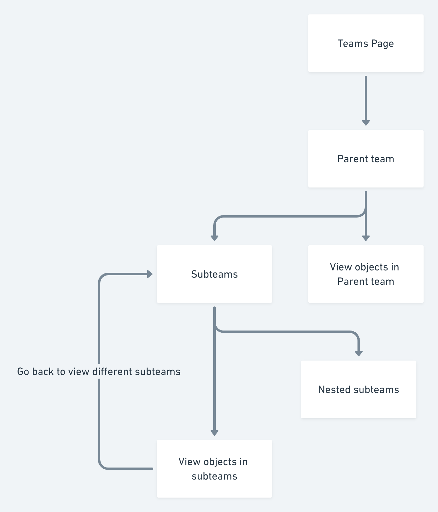
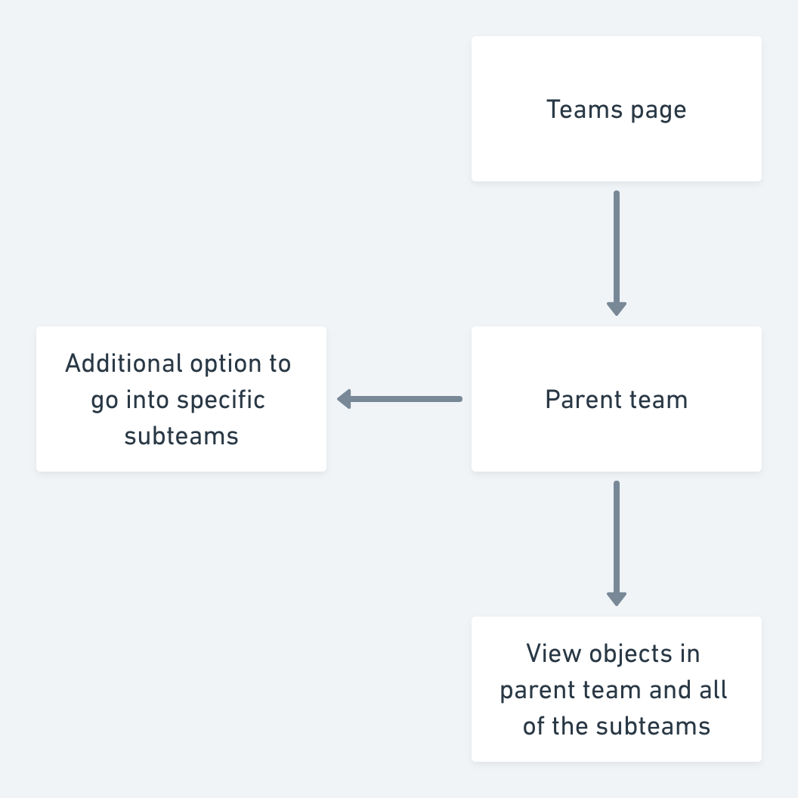

PagerDuty
UX Design intern · Summer 2018
Overview
Redesigning PagerDuty's teams configuration feature to help administrators make triaged incident management decisions with more confidence.
Process deckRole
Designer working in a cross functional product team.
Project Timeline
4 weeks
Team
Elliot Onn - UX Designer
Justin Lazaro - Product Owner
Responsibilities
Design research, interaction and visual design, and product thinking.
Introduction
As a UX design intern at PagerDuty, I was tasked with designing a way to view administrator and team based data in a holistic way so that they can make Incident Management decisions.
I worked in close co-ordination with our team's PM, Justin, our embedded UX designer and mentor, Elliot, and two software engineers.
Problem
Current workflow
Team administrators are unable to view and edit, at a macro level, what users and objects are part of a parent team’s sub teams, causing confusion in the incident management process.
This caused team managers and administrators to start configuring teams by Creating a team or subteam. -> going to an object tab (for example: escalation policies) -> configuring or adding that object to a specific team, or multiple teams from there .
While this process seemed to have more friction, it made sense from the user’s point of view because they didn’t have to go on each subteam and add it manually from there.
Feature usage: -15% over the last six months across enterprise accounts.
Did this mean that the teams setting feature was redundant?
Referring back to some previous user research notes,along with auditing the product and the workflow for administrators using teams and synthesizing this information, we realized that the user’s intent when using the teams setting was to quickly view, as well as add users, escalation policies and objects to different incident management teams, based on the parent team’s domain expertise which allows administrators to triage incident response, and manage incidents in a less stressful way.
We also used the Jobs to Be Done frameowork to reframe the problem to include the user's motivation, and it gave us as a team a clear design goal to work towards.
Design Goal
How might we surface relevant information at a high level for administrators and team managers so that they can make incident management decisions with confidence?
Hypothesis
Redesigned workflow
A simplified workflow for viewing and configuring teams based objects, that lets administrators make incident management decisions with confidence.
Success metric
10% increase in feature usage for new users during multivariate testing.
Why this metric?
We observed through our analytics tool (Pendo), that while 80% of our users were landing on this feature, over time, they resorted to using the alternate workflow mentioned above (going through individual objects)
This would help us measure if our redesign effectively reduced the friction that our users faced during this process.
Initial Sketches
I sketched out various ideas I had for a solution to the problem space, and narrowed down the concept to a few ideas after validating them with our PM and UX Designer.

Design Decisions
Representing teams within a single view
One of the main objectives of the design was to provide our user with a high level view of all the team related information and objects they could interact with.
This was to ensure that the information users were looking at was easily scannable and would help them make incident management decisions efficiently.
To this end, I made a few explorations that would hopefully aid us in achieving this goal.

Solution A - two separate data tables
In this exploration, the explicit copy above the data tables show what the user is viewing at any given time
However, I hypothesized that two different data tables on a single page increases cognitive load for the user, denying them the ability to quickly focus on one particular view between parent and sub team. This was something we definitely wanted to test.

Solution B - tag based search and filter
Solution B presents a tag based filter solution, with search functions for subteams, object name, and role.
However, there were some important questions that needed to be answered.
Would the information contextualized in the right way?
There was a definite tradeoff b/w granular info and control vs. speed, which was the main intent for simplifying the workflow anyways.
After touching base with engineering, a constraint was that we had never implemented tag based search and filter before, and engineers had other high priority tickets at the time, which led us to iterate on other concepts.

Solution C - segmented controls
Solution C, however, leveraged segmented controls as a design pattern, where users could clearly change context in terms of viewing parent team based data or subteam based data.
Segmented controls allow for quick and easy context switching, where a user is able to focus on a particular view, either the parent team or the subteams within.
To implement, I audited best practice usage of segmented controls in enterprise apps such as Salesforce and ServiceNow to inform our design
Keeping this in mind, we advanced with solution C as the best course of action for the team view, with the goal of testing out solution A for the case where the administrator would want to view both parent teams and sub-teams.
Surfacing data in an intuitive way
Another important design decision was to surface data to our users in a way that was scalable, and the goal was to help users to clearly see the team and sub team hierarchies involved.

Solution A - Data table with team role and subteam combined
While this solution works well for a singular user on a team when they might have a defined role. However, we must consider the case where a user could be part of a subteam within a subteam (nested subteams). Would this cause information overload?
The main question here was whether this would scale for such a case, something that we’d only be able to test with real users.

Solution B - Data table with team role in a separate column
Essentially, this solution aimed to abstract the two key data points(roles and subteams), with the design intent that it'd provide clear separation between a subteam and specific roles a user might have.
It made logical sense from an administrator standpoint, as it is even more explicit what user or object is in a subteam, guiding the user in their intent to select and view based on their subteam-based role, while being more scalable/consistent for other objects such as Escalation policies and integrations.

Solution C - data table with base and subteam roles in a single columns
This allowed administrators to view users’ base roles along with team roles, but did this scale well with other objects (Escalation Policies, integrations) relevant to subteams?
After looking back at user interview notes, we realized that administrators weren’t looking at base roles when making decisions, but rather team specific roles to triage incident management.
We went with Solution B for our data tables as it was highly scalable, surfacing both object data and heirarchies in a way that is unobtrusive and explicit to the user, especially when tested against Solution A.
Initial concept
PRO
Segmented control allowed for quick context switching
CON
Used data table in subteams view where subteam and role are combined, detracting from a focused experience
Potential information overload eg: one user on multiple sub teams with different roles
User Testing
Initial testing unraveled a few problems with our design
The two data tables in the “sub teams and parent team” view cause cognitive overload with admins not being able to focus on two tables at the same time, detracting from our user’s intent to make decisions quickly.
Lack of search bar in all sections left users confused, consistency issue which can potentially hinder experiences
Information felt cluttered within data tables - “I’m looking at too much here, how am I supposed to parse through this?”- SRE at client company (Cisco)
How might we better surface information in data tables for the "Subteam and Parent team view?
Iteration 2
PROS
Separated data table is consistent and surfaces team heirarchies more clearly
Combined parent team and subteam view is clear and scalable
Consistent search function across all segmented views
CON
Visual differentiation of segmented controls not as accessible
Final Design
I iterated on the segmented control to be more accessible and minimize dissonance, and worked with our design systems lead Olivier to implement
Entry point - Teams configuration page
Impact
13% increase of feature usage against previous design over multivariate testing during beta launch.
Qualitative surveys validated improvement from previous design, and pitched design to our Product Manager, adopted by the team for product roadmap
Update: Feature shipped in October
Lessons and Next Steps
Metrics are your ally in designing the right solution.
Design for the happy path first, before diving deeper into edge case scenarios. Especially coming in from a CS background, this was a struggle at first, but I realized that we need to be generative first before honing in and making corner case considerations.
Communication and collaboration is key. Aim to bring in stakeholders early on in the design process.
Potential next steps
How might we help existing users who left the feature for an alternate workflow come back? After discussing this with our UX design lead, a potential experiment proposed was to perhaps surface team based configuration on the home page, with the initial hypothesis that it would drive interaction.